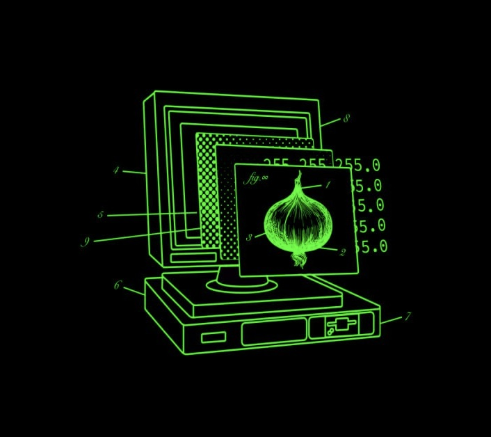

END NETWORK LIST
3nigma-NET
FIELD-TF
LIFE Network
> LLL

ONLINE STATUS: ONLINE
ACCESS LEVEL: 4
PRIVACY: 0
LAST CHECKED: 01/24/20 08:16:50 AM
USER: PROXY-KALI
ADDRESS: X86_64
KALI_ROLLING:CENTRAL-NODES
ENVIRONMENT SET TO: VNVIRTUALBOX
Ctrl Key to navigate, Left Arrow to go back (Press 'q' to Exit)
Control Nodes 5.3 build 5310 - developer mode - pre-alpha_0.4